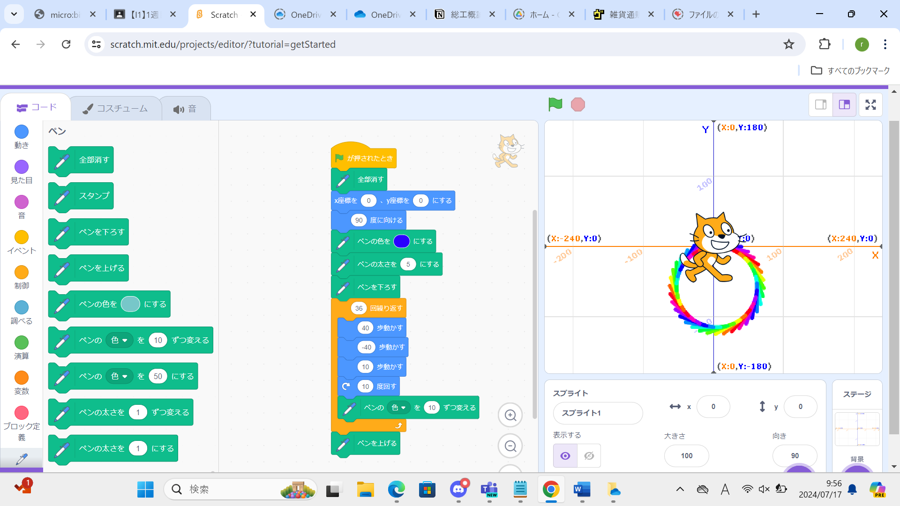
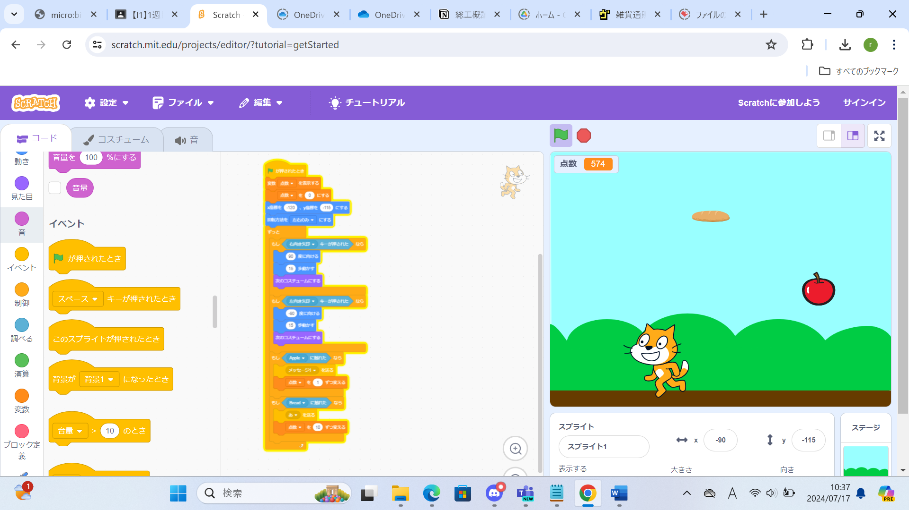

1週目のレポート ： 公大高専１年実習I-1
1a班15番 Yuma
第1週目
1-1 サイエンスアート

1.内容
スクラッチを使って線を書くプログラムを作った。今まで全くプログラミングをしたことがなかったが、前回までのE1の実習での経験などを活用し、なんとかプログラムを作ることができた
2.感想
少し前まで、小中学校の授業でしかプログラミングをしたことがない、超プログラミング初心者だったが、実験実習の授業を通して徐々にプログラミングのいろはが分かり始めてきた。
初心者ということもあり、ぐんぐん成長していけるので、プログラミングが楽しいと感じている。
1-2 ゲーム

1.内容
スクラッチを使ってネコが落ちてくるリンゴをキャッチするゲームも作った。上手に論理のブロックを使い、分岐を作成したことで、少ないプログラムでゲームを成立させることができた。
2.感想
ゲームコーディネイターやプログラマーは、今の子どもたちのあこがれの職業のうちの一つであり、それを実習で体験できるのは本当に高専の強みであると思った。
1-3 ホームページ作成
私のホームページ
1.内容
ないようないよう
2.感想
今回のプログラムは、まだまだ易しいものであると感じた。
これからブロックではなく、プログラミングの言語を用いてプログラムを作っていくようになると、難易度が大幅に上がると思うが、諦めずに食らいついていきたい。
各ページへのリンク
1週目のレポート
2週目のレポート
3週目のレポート
私のホームページ